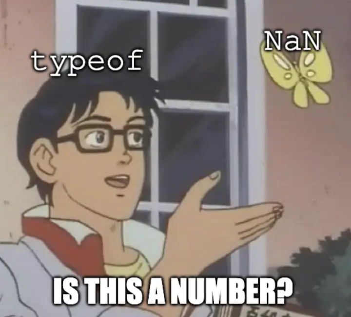

Divide 0 by 0 in JavaScript and you get back NaN, short for not a number. It looks like it's a weird special value. But it's really a whole region of bit patterns that are all represented simply as NaN. In this curio we'll map every NaN in a 16-bit float, see how JavaScript compares NaNs in different ways, take one apart, find out how to store an arbitrary payload in NaN, see some real world uses for different NaN values, and build one in JavaScript.
Every map and row of switches works from the keyboard: Tab to it and use the arrow keys (Shift moves further). Letter keys shown on a button go to the station you're using.

typeof NaN really is "number".Station 1
A 16-bit float has 65,536 possible bit patterns, and this map has a cell for every one. They're sorted into 64 tiles of 1,024. Every cell in a tile shares the same sign and exponent, the part of a float that says how big it is. Two whole tiles are NaN, apart from one corner cell each, which is infinity. Pick any cell to see what it holds.
That's 2,046 different NaNs among 65,536 patterns: 1,024 quiet and 1,022 signaling, half of each with the sign bit set. Station 3 explains the difference. A 32-bit float has 16,777,214 NaNs and a 64-bit float, the kind JavaScript uses for every number, has 9,007,199,254,740,990.
Station 2
Here are four NaNs at 64 bits, the size JavaScript uses for every number, and one ordinary number to compare them with. Every one of the NaNs prints as NaN. Now compare them three ways. The bits say these are four different values. JavaScript's comparisons can't tell them apart.
Station 3
These are the 64 bits of one JavaScript number, sorted into their four fields. A float is NaN when all 11 exponent bits are on and the bits after them aren't all off. Turn off any exponent bit and it's an ordinary number again. The first bit after the exponent is the quiet bit. The other 51 are the payload. With the quiet bit on, the payload can be anything, even all zeros. With it off, the NaN is signaling (Station 4), and the payload needs at least one bit on, since all ones followed by all zeros is infinity. That's why Station 1 counts one fewer signaling NaN than quiet for each sign. Past that one rule, nothing about NaN reads the payload, so a program can keep whatever it likes there.
Station 4
Arithmetic on a NaN gives back a NaN, and the floating-point standard asks that it keep the payload. A signaling NaN, with its quiet bit off, is meant to raise an alarm when used, and comes out quiet, with the quiet bit on. Pick a NaN and an operation. Your browser does the sum with its own floating point, and every bit that changed is ringed.
Station 5
Real programs put those spare bits to work. A monitoring system marks the end of a data series with one, a statistics language marks missing data with another, and language runtimes hide whole values inside them, a trick called NaN-boxing. Firefox's and Safari's JavaScript engines have done it too. Pick a specimen and see how each program reads the same 64 bits.
| Program, and what it checks | Reads it as |
|---|
Station 6
Type 0x7FF0000000000002 into a JavaScript console hoping for Prometheus's marker and you get back 9218868437227405000. A hex literal is a whole number, not a bit pattern, and that one is too big to keep exactly. To get the NaN, write the 64 bits into a buffer and read them back out as a float. Then see which everyday steps keep those bits in Node. These answers were recorded in Node v25.9.0 on an Apple arm64 Mac. Another version, another JavaScript engine, or another kind of chip may give different answers.
So treat a marker as bits for as long as you can. Coming in, check the raw bytes before they become a number, with view.getBigUint64(0) === 0x7FF0000000000002n. Going out, write the bits with setBigUint64, rather than passing a NaN around and writing it at the end.
== says a NaN equals nothing, itself included, and Object.is says every NaN is the same as every other. Only the bits show the difference, which is why code that cares, like the Prometheus monitoring system marking the end of a time series with one particular NaN, compares bits.a + b and b + a can come out different. Try x + y and y + x in Station 4.7FFC000000000003 is true to clox and the number NaN to everything else, and FFFFFFFFFFFFFFFF is nil to LuaJIT. Bits only mean something once a program decides how to read them.NA survives being quieted, though R still doesn't promise which of NA and NaN a sum mixing them gives back.111 in place of 64 bits. When the gap since the last sample also matches the gap before it, the five-bit code 11111 stands for the timestamp and the marker together.model/value/value.go, for StaleNaN and NormalNaN and the comment explaining the marker's payload; model/textparse/promparse.go and openmetricsparse.go, for scraped NaNs becoming NormalNaN; and tsdb/chunkenc/xor2.go, for the xor2 format's stale codes.src/math/bits.go, for the bits of math.NaN().src/main/arithmetic.c, for how NA is built and recognized, and the R documentation for NA and is.nan.src/lj_obj.h, for its tagged NaNs in the 64-bit (GC64) layout and the one NaN its floating-point unit makes.